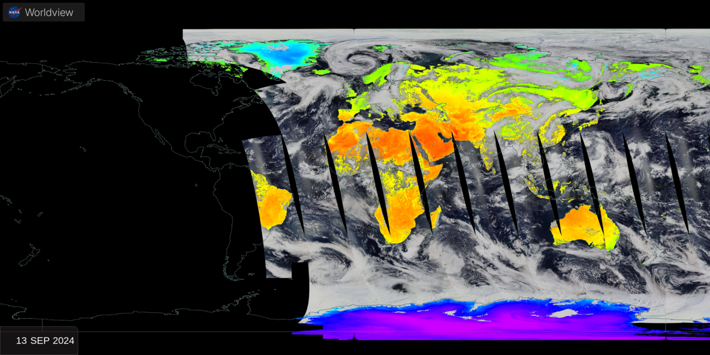
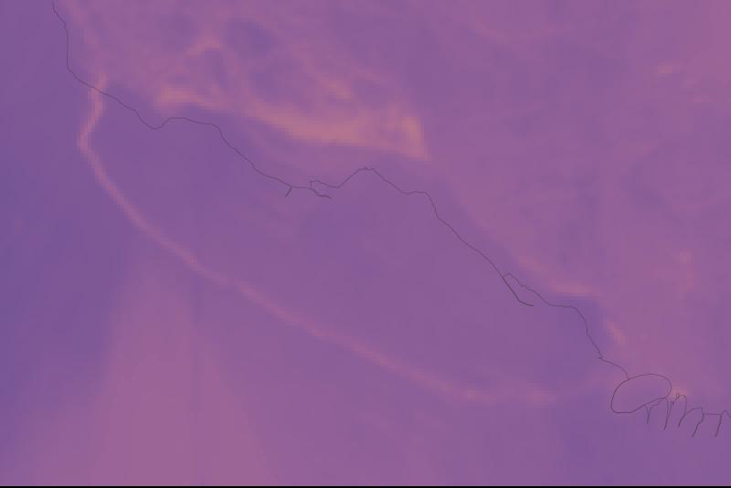
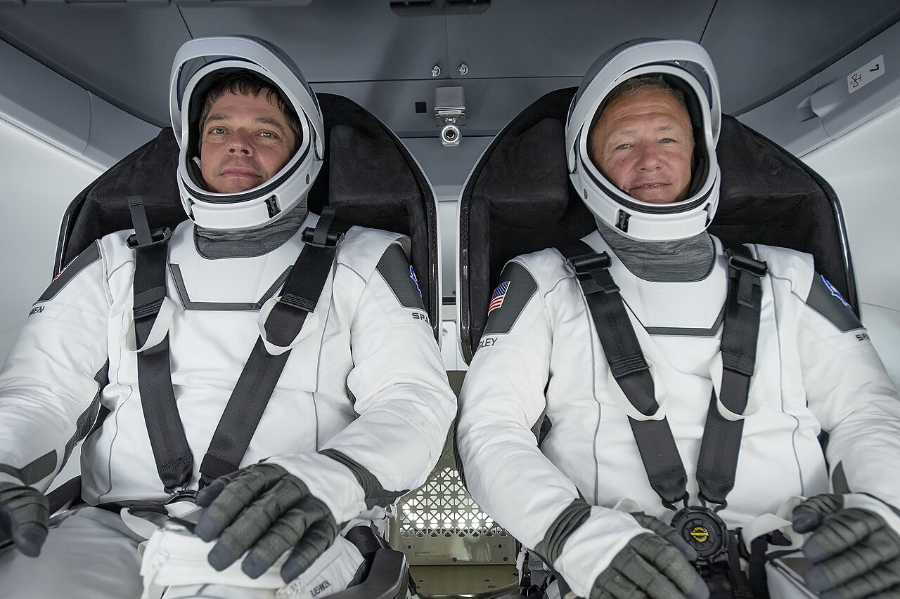
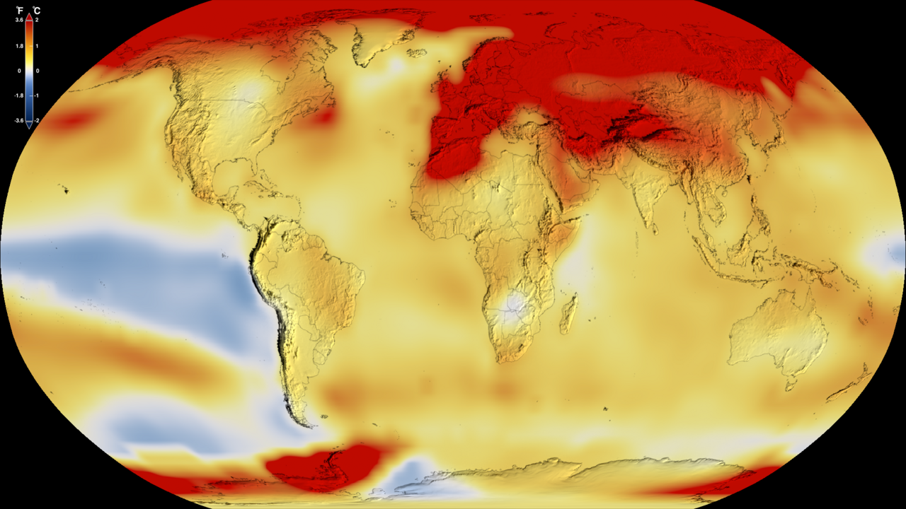
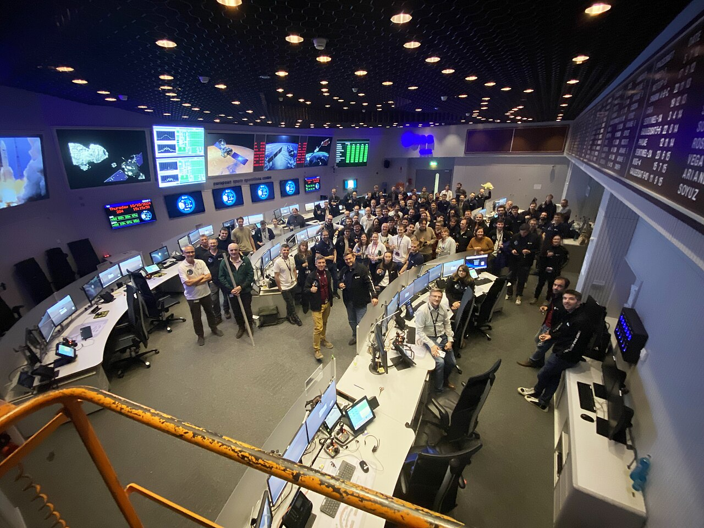
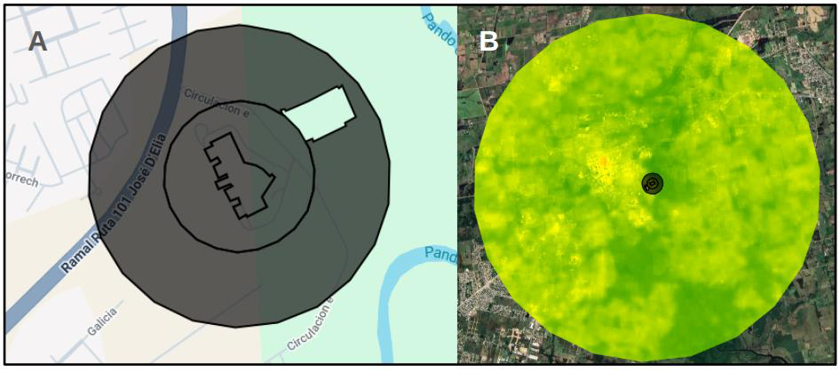
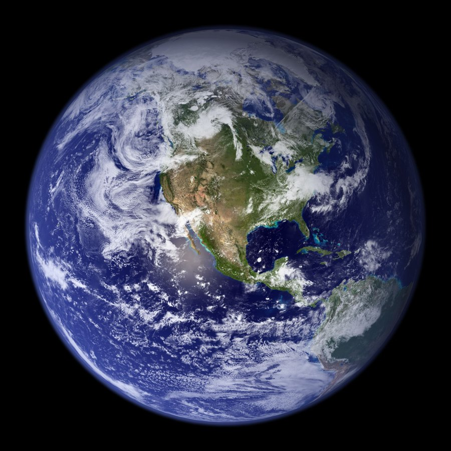

Direção visual do projeto LandLytics (V2). O produto é um console de observação da Terra: o usuário é um Analista de Observação da Terra de um centro de operações de clima urbano, cuja tarefa crítica é detectar, via LST orbital (Landsat), quando o datacenter ultrapassa o limiar térmico seguro frente à área verde e emitir alerta. A linguagem visual nasce daí: telemetria escura, alto contraste, leitura rápida sob pressão.
Cada referência abaixo é pública e foi escolhida por um motivo específico, o que adotamos e o que evitamos.

Adotamos: fundo escuro com a Terra em destaque e dados sobrepostos como "instrumentos". Evitamos: excesso de números simultâneos que competem pela atenção.

Adotamos: mapa em tela cheia + painel lateral de camadas com toggles e opacidade. Evitamos: menus profundos: aqui tudo fica a um clique.

Adotamos: estética sóbria, tipografia geométrica, estados claros (verde = nominal, vermelho = alerta). Evitamos: skeuomorfismo; ficamos no flat.

Adotamos: rampa de cor divergente legível e legenda sempre visível. Evitamos: paletas tipo "arco-íris" que distorcem a leitura quantitativa.

Adotamos: faixa de status e banner de alerta de alta prioridade. Evitamos: alarmes que piscam sem informação, nosso alerta diz o porquê.

Adotamos: a comparação térmica via satélite (datacenter × área verde) e a narrativa de denúncia ambiental via uso de satélites. Evitamos: a apresentação puramente acadêmica: reposicionamos como missão.
Adotamos: a lógica de mapa nacional com marcadores e um painel lateral que cataloga cada data center (operador, capacidade, localização), base da tela usa.html. Evitamos: a densidade comercial e os menus profundos do site; aqui tudo fica a um clique e só com dado real.

Adotamos: a Terra em 3D girando como portal de entrada (tela index.html), reforçando o tema de observação orbital antes do dado técnico, no espírito do NASA Eyes. Evitamos: poluir o globo com marcadores e brilhos; deixamos a esfera limpa para não competir com a leitura do texto ao lado.
Escura para reduzir fadiga em monitoramento prolongado; laranja de missão como acento; verde/vermelho reservados a estado (nominal/alerta). Contrastes conferidos para WCAG AA.
Inter: alta legibilidade em telas, numerais tabulares (alinham as leituras de temperatura), licença livre (Google Fonts). Pesos limitados a 400/600/700/800 para hierarquia clara sem ruído.
Moodboard do projeto LandLytics · disciplina Front-End Design (FED) · Global Solution 2026 · FIAP Rio. As imagens de referência são marcadas de terceiros usadas apenas para estudo de direção visual.